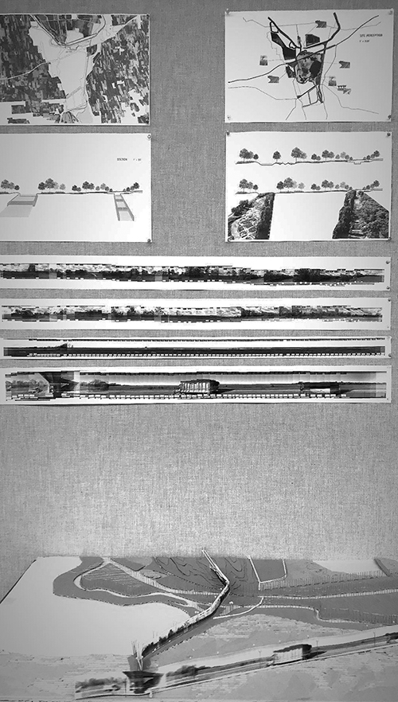

One of my research interests is how state power (especially colonialism ),
has managed fluidity and shaped our perception about fluidity. Compared to
other spatial practices of control, such as mass infrastructure , the management
of fluidity is subtler yet no less significant. Indeed, the impacts of
colonization have shaped the world facing climate change. Fluidity has been
long associated with discordance and often provoked trepidation, which is
signified by the collective uncertainty towards the sea-level rise . I am
interested to explore, with the increasing presence of uncontrollable fluidity
in our lives , whether landscape architecture can be used as a framework to
embrace an alternative attitude to fluidity .